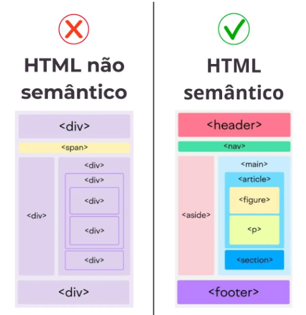

A semântica das tags no HTML refere-se ao uso correto dos elementos de acordo com o significado do conteúdo que eles representam. Em vez de apenas estruturar visualmente uma página, o HTML semântico busca descrever o papel de cada parte do conteúdo, tornando o código mais compreensível tanto para desenvolvedores quanto para navegadores, mecanismos de busca e tecnologias assistivas.
Antigamente, era muito comum o uso excessivo de tags genéricas como `<div>` e `<span>` para organizar páginas inteiras. Embora funcionais, essas tags não carregam significado algum sobre o conteúdo que envolvem. Com a evolução do HTML, surgiram diversas tags semânticas, como `<header>`, `<nav>`, `<main>`, `<section>`, `<article>`, `<aside>` e `<footer>`, que indicam claramente a função de cada parte da página. Por exemplo, `<header>` representa o cabeçalho, `<nav>` é destinado à navegação, enquanto `<main>` contém o conteúdo principal.
O uso dessas tags traz diversos benefícios. Um dos principais é a melhoria no SEO (otimização para mecanismos de busca), pois ferramentas como o Google conseguem entender melhor a estrutura e a relevância do conteúdo da página. Além disso, a semântica contribui significativamente para a acessibilidade, já que leitores de tela utilizam essas informações para ajudar pessoas com deficiência visual a navegar pelo site de forma mais eficiente.
Outro ponto importante é a organização e manutenção do código. Um HTML bem estruturado semanticamente é mais fácil de ler, entender e modificar. Isso facilita o trabalho em equipe e reduz erros durante o desenvolvimento. Além disso, a separação entre estrutura (HTML), estilo (CSS) e comportamento (JavaScript) se torna mais clara e eficiente.
Portanto, utilizar a semântica correta no HTML não é apenas uma boa prática, mas uma necessidade no desenvolvimento web moderno. Ela torna o código mais profissional, acessível e preparado para diferentes tecnologias, garantindo uma melhor experiência para todos os usuários.

Algumas tags e suas funções:
Estrutura básica
- <html> - É a raiz do site(tudo fica dentro dela).
- <head> - Configurações da página(não aparece para o usuário).
- <title> - Nome que aparece na aba do navegador.
- <body> - Tudo que o usuário vê.
Texto
- <h1> até <h6> - Títulos (h1 é o mais importante).
- <p> - Páragrafo.
- <br> - Quebra de linha.
- <hr> - Linha de separação.
Links e imagens
- <a> - Cria links. EX: clicar e ir para outro site.
- <img> - Mostra imagens (precisa do caminho da imagem).
Listas
- <ul> - Lista não ordenada ( igual a essa com bolinhas).
- <ol> - Lista ordenada (numerada).
- <li> - Item da lista.
Organização
- <div> - Caixa genérica(organizar conteúdo).
- <span> - Igual a div , mas em linha para pequenos trechos de texto.
Tabelas
- <table> - Tabela.
- <tr> - Linha.
- <td> - Coluna.
- <th> - Cabeçalho da tabela.
Formulários
- <form> Formulário.
- <input> - Campo de digitação.
- <button> - Botão.
Tags semânticas
- <header> - Cabeçalho.
- <nav> - Menu.
- <main> - Conteúdo principal.
- <section> - seção do site.
- <article> - Conteúdo independente.
- <aside> - Conteúdo na lateral do site, geralmente para propagandas ou conteúdos paralelos.
- <footer> - Rodapé.